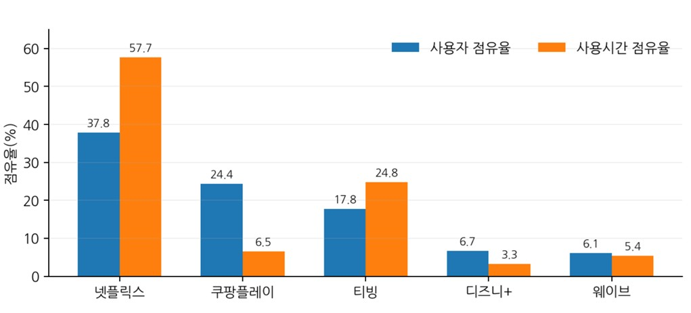
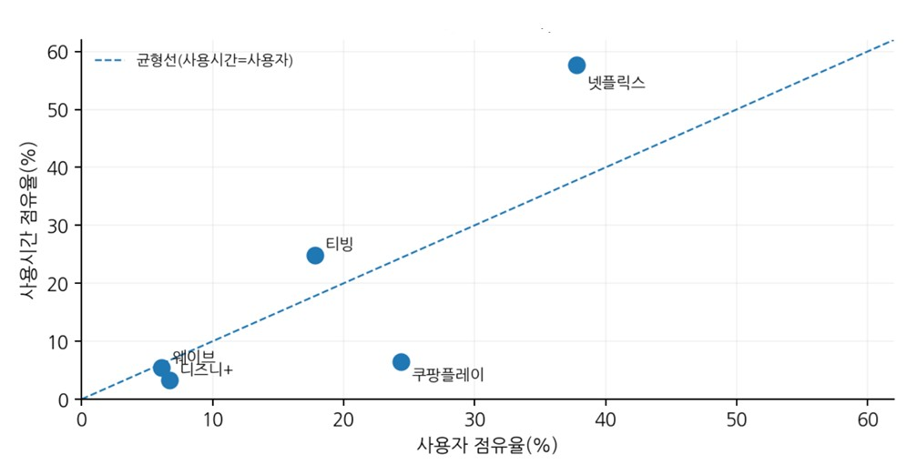
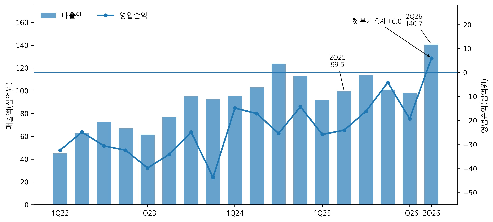

국내 OTT 시장을 이야기할 때 가장 먼저 등장하는 수치는 가입자 규모와 월간활성이용자수(MAU)다. 해당 서비스가 얼마나 많은 사람에게 닿았는지를 보여주는 유용한 지표다. 그러나 오늘날 OTT 이용환경을 이러한 단일 수치만으로 설명하기에는 부족하다. 이용자들은 여러 OTT를 동시에 구독하고, 통신·커머스 멤버십에 포함된 서비스를 함께 이용하며, 스포츠나 특정 오리지널 콘텐츠가 있을 때만 일시적으로 앱을 켜기도 한다. KISDI 조사에서 월정액 OTT 이용자가 평균 2.52개의 유료 OTT(유튜브 프리미엄 제외)를 이용하는 것으로 나타난 것도 이러한 멀티호밍(multi-homing)이 이미 보편화됐음을 보여준다.
이 지점에서 ‘디커플링(decoupling)’이라는 개념이 유용하다. 일반적으로 디커플링은 서로 연동될 것으로 예상되는 두 현상이나 지표의 관계가 약해지거나 분리되는 상황을 뜻한다. 본 고에서는 이를 OTT에 적용해, 이용자 규모와 실제 사용시간이 동일한 비율이나 순위로 나타나지 않는 현상을 편의상 ‘OTT 디커플링’으로 설명한다. 이용자 규모는 크지만 실제 머무는 시간은 짧은 플랫폼이 있는 반면, 이용자 규모는 상대적으로 작아도 더 자주 찾고 오래 시청하는 플랫폼이 있다는 뜻이다.
이러한 차이가 중요한 이유는 MAU와 이용자 규모는 플랫폼이 확보한 도달(reach)의 폭을 보여주지만, 사용시간은 이용자가 얼마나 많은 시간을 그 서비스에 배분했는지를 보여주기 때문이다. 2026년 6월 와이즈앱·리테일이 공개한 자료는 이러한 차이를 선명하게 보여준다. 넷플릭스의 사용자 점유율은 37.8%였지만 사용시간 점유율은 57.7%였다. 티빙 역시 사용자 점유율 17.8%에 비해 사용시간 점유율이 24.8%로 높았다. 반면 쿠팡플레이는 사용자 점유율 24.4%로 두 번째였지만, 사용시간 점유율은 6.5%에 그쳤다. 디즈니+와 웨이브는 사용자 점유율보다 사용시간 점유율이 낮았지만, 쿠팡플레이처럼 격차가 크지는 않았다.

[그림 1] 2026년 5월 주요 OTT의 사용자·사용시간 점유율
* 출처: 와이즈앱·리테일(2026. 6. 23.). 앞의 자료를 바탕으로 연구자 재구성
* 주: 스마트폰 앱 표본 기반. ‘점유율’은 동일 조사 내 주요 OTT 앱의 상대적 비중이며 유료가입자 점유율과 다름
여기서 주목할 점은 스마트폰 앱 사용자를 기준으로 한 2위권 경쟁이다. 사용자 규모만 보면 쿠팡플레이가 티빙보다 앞서지만, 사용시간을 기준으로 보면 티빙이 쿠팡플레이를 크게 앞선다. 결국 ‘몇 명이 이용했는가’와 ‘실제로 이용자들이 얼마나 머물렀는가’에 따라 경쟁구도가 달라진다. OTT 사업 초기에는 가입자 확대가 성장의 원동력이었다. 즉 시장형성의 초기단계에는 신규 가입자와 MAU가 사업 성과를 비교하는 데 충분히 유용했다. 그러나 시장이 성숙하고 다중 구독이 확대될수록 이용자가 어느 서비스를 ‘보유하거나 이용하고 있는가’보다 어느 서비스에 ‘시간을 쓰고 있는가’가 중요해진 것이다.
무엇보다 구독형 OTT에서는 반복 이용이 해지 가능성을 낮추는 토대가 되고, 광고형 요금제에서는 사용시간이 늘수록 광고 인벤토리와 반복 노출의 기회가 커진다. 추천 시스템 측면에서도 더 많은 시청은 장르 선호, 완주 여부, 시청 중단 시점 등 풍부한 행동 기록을 남기게 된다. 따라서 OTT 경쟁 상황을 해석할 때 도달률뿐만 아니라 이들이 얼마나 자주 들어와서 얼마동안 체류하는지, 그 시간이 실제 수익으로 어떻게 전환되는지를 함께 살펴볼 필요가 있다. 물론 본고에서 사용된 수치는 스마트폰 앱 표본에 기반하고 있다는 한계가 있으나, 2025년 방송매체 이용행태조사에서 OTT 이용자의 주 시청기기로 스마트폰이 83.6%로 가장 높았던 점을 고려할 때, 스마트폰 이용자 표본을 통해 플랫폼별 사용자 규모와 사용시간의 상대적 차이를 살펴보는 것은 유의미할 것이다.
사용자 규모(점유율)와 사용시간 점유율의 차이를 보다 구체적으로 비교하기 위해, 두 개의 단순 지표를 산출했다. 첫째, ‘디커플링 격차(D)’는 사용시간 점유율에서 사용자 규모(점유율)을 뺀 값이다. 양(+)이면 이용자 비중보다 사용시간 비중이 상대적으로 크고, 음(-)이면 그 반대이다. <표 1>을 보면, 넷플릭스는 +19.9%p로 주요 OTT 가운데 가장 큰 양(+)의 격차를 보였고, 티빙도 +7.0%p를 기록해 이용자 규모에 비해 상대적으로 많은 사용시간을 확보한 것으로 나타났다. 반면 쿠팡플레이는 사용자 점유율에서는 넷플릭스에 이어 2위였지만, 디커플링 격차는 -17.9%p로 가장 크게 벌어졌다. 디즈니+(-3.4%p)와 웨이브(-0.7%p) 역시 사용시간 점유율이 사용자 규모(점유율)보다 낮았지만, 쿠팡플레이에 비하면 그 차이는 상대적으로 작았다. 특히 웨이브는 두 점유율 간 차이가 0에 가까워 이용자 규모와 사용시간 점유율이 비교적 비슷한 수준으로 나타났다. 결국 같은 OTT 시장 안에서도 넷플릭스와 티빙처럼 ‘이용자 규모(점유율)보다 사용시간 비중이 높은 플랫폼’과 쿠팡플레이처럼 ‘넓은 이용자 기반에 비해 사용시간 비중이 낮은 플랫폼’이 동시에 존재한다는 점을 확인할 수 있다.
둘째, ‘사용시간 집중도(T)’는 사용시간 점유율을 사용자 점유율로 나눈 상대적 비율이다. 1은 두 점유율이 같은 산술적 기준점이며, 1을 초과하면 이용자 규모에 비해 상대적으로 더 많은 사용시간을 확보하고 있음을, 1보다 작으면 상대적으로 적은 사용시간을 확보하고 있음을 뜻한다. 즉 티빙의 사용시간 집중도 1.39는 사용자 점유율 기준으로 볼 때 사용시간 비중이 약 39% 더 큰 수준이라는 의미이다.
[표 1] 2026년 5월 국내 OTT의 디커플링 격차와 사용시간 집중도
사용시간 집중도 T = 사용시간 점유율 ÷ 사용자 점유율
기타 4사(라프텔, U+모바일tv, 왓챠, 스포티비 나우)의 사용시간 점유율은 상위 5사 합계의 잔여 값으로 추정함
하단의 [그림 2]에서 ‘사용시간 집중도(T)’를 보면, 넷플릭스(1.53)와 티빙(1.39)은 이용자 비중에 비해 사용시간 비중이 상대적으로 높게 나타난 반면, 쿠팡플레이(0.27)는 넓은 도달에 비해 사용시간 비중이 낮은 편이다. 물론 이 결과만으로 플랫폼의 우열을 단정할 수는 없다. 쿠팡플레이는 쿠팡 와우 멤버십과 결합된 서비스라는 점에서 OTT 자체의 서비스 외에도 다른 이용자 확보 구조를 갖고 있다. 또한 프리미어리그·NBA와 같은 시즌형 스포츠 중계와 ‘쿠팡플레이 시리즈’ 같은 대형 이벤트를 통해 이용자 유입을 확대하는 전략적 강점이 있다. 반대로 티빙은 국내 드라마·예능과 KBO처럼 반복 소비되는 콘텐츠를 중심으로 재방문과 장시간 이용을 유도하는 포트폴리오를 구축해 왔다. 핵심은 어느 모델이 더 우월하다는 것이 아니라, ‘유입을 만드는 힘’과 ‘시간을 붙잡는 힘’을 구분해서 해석해야 한다는 점이다.

[그림 2] 도달(reach)과 집중(attention)의 디커플링 지도
* 출처: 위의 <표 1>의 사용시간 집중도(T)의 값을 기준으로 연구자가 구성
OTT 시장에서 사용시간이 중요한 이유는 ‘시간의 확보’가 ‘수익’으로 연결되기 때문이다. 최근 티빙의 수익 개선은 이런 맥락에서 주목할 만하다. 티빙은 2022년 매출 2,476억 원, 영업손실 약 1,192억 원을 기록했고, 2023년에는 매출 3,264억 원으로 성장했지만, 영업손실도 약 1,420억 원으로 확대됐다. 그러나 2024년 매출은 4,353억 원으로 늘었고, 영업손실은 약 710억 원으로 절반 수준까지 축소됐다.

[그림 3] 티빙 분기별 매출액·영업손익 추이
* 출처: 지인해(2026.8.26). CJ ENM 티빙 사업부 실적. 신한투자증권 제공자료
분기별 흐름을 보면 변화는 더욱 뚜렷하다. 2025년 2분기 티빙 매출은 995억 원, 영업손실은 약 240억 원이었다. 2026년 1분기에도 192억 원의 영업손실을 기록했지만, 전년보다 손실 폭은 축소됐다. 이어 2026년 2분기 매출은 1,407억 원으로 전년 대비 41.4% 증가했고, 영업이익은 약 60억 원으로 돌아섰다. 티빙 출범 이후 첫 분기 흑자이다.
이 변화는 ‘이용자 시간’이라는 관점에서 흥미롭다. CJ ENM은 2분기 수익성 개선 배경으로 KBO 시즌과 오리지널 콘텐츠 흥행에 따른 순가입자·MAU 증가, 구독·광고 매출의 성장, 해외 브랜드관 매출 확대 등을 제시했다. 이용자를 한 번 유입시키는 데 그치지 않고 반복 시청과 체류를 만들어낸 뒤, 그 시간을 구독·광고·해외유통 등 매출로 연결하는 구조가 중요해지고 있음을 보여주었다. 티빙의 광고 매출 또한 2026년 1분기 전년 대비 35.3% 증가했고, 2분기에도 52% 성장했다. 앞서 살펴본 티빙의 사용시간 집중도와 흑자 전환을 광고매출 증가와 단순 인과관계로 연결할 수는 없지만, 이용자 시간을 확보하는 능력이 구독뿐 아니라 광고 수익화의 중요한 기반이 되고 있는 것은 분명하다.
본고에서 살펴본 디커플링 현상은 이용자 규모가 크다고 반드시 많은 시청시간을 확보하는 것은 아니며, 이용자 규모가 작더라도 반복 방문과 장시간 시청을 통해 높은 시간 점유율을 가질 수 있음을 보여주었다. 이러한 차이는 광고형 요금제가 확산되는 오늘날의 OTT 환경에서 더욱 중요해지고 있다. KT 나스미디어의 ‘2026 인터넷 이용자 조사(NPR)’에 따르면, OTT 구독자 조사표본(n=1,494)의 59.7%가 광고형 요금제를 이용하고 있으며, 넷플릭스 구독자와 티빙 구독자 중 광고형 요금제 이용 비중도 각각 54.2%, 53.5%로 과반을 차지했다. 광고형 요금제가 주요 구독 방식으로 자리 잡으면서 사용시간은 단순한 체류지표를 넘어 광고 노출 기회를 확대하고 시청 데이터를 축적할 수 있는 경제적 자원으로 부상하고 있다.
따라서 정책기관과 산업계가 앞으로 함께 고려해야 할 것은 MAU 지수가 아니라 이용자 규모, 사용시간, 재방문, 광고형 요금제 이용률, 광고매출, 크로스디바이스 시청을 연결한 복수 지표들이다. 사업자는 이용자 유입과 체류를 구분해 관리하고, 광고주는 도달 규모뿐 아니라 이용 빈도와 체류 수준까지 포함해서 매체의 가치를 판단할 필요가 있다. 정책기관 역시 OTT의 기존 방송광고 대체·보완 효과와 그 영향력을 파악하기 위해서는, 이용자 규모뿐 아니라 시청시간과 광고매출을 함께 조사하는 정례 통계체계를 마련할 필요가 있다. OTT 경쟁의 중심이 이용자 규모에서 이용시간으로 이동하고 있다면, 시장을 측정하고 평가하는 방식도 이에 맞춰 달라져야 하기 때문이다.
- 방송미디어통신위원회 (2026). 2025 방송매체 이용행태조사 보고서
- 아주경제 (2026. 5. 7). [컨콜] 티빙, 1분기 영업손실 192억원…전년 比 65억원↓
- 와이즈앱·리테일 (2026. 6. 23). OTT 서비스 시장 연평균 6% 성장...넷플릭스 점유율 38%.
- 쿠팡 (2025. 6. 19). 쿠팡플레이, 올 8월 ‘스포츠 패스’ 일반 회원 요금제 출시
- CJ ENM (2025. 2. 12). CJ ENM 2024년 매출 5조 2,314억원 영업이익 1,045억원 달성, 사업 경쟁력 강화로 흑자 전환 성공, CJ 뉴스룸
- CJ ENM (2026. 8. 6). “2분기 매출 1조 2,033억원, 영업이익 334억원…IP 경쟁력 및 플랫폼 외형 확장 통해 수익성 개선.”; CJ ENM (2026. 8. 6). 2026년 2분기 실적발표 컨퍼런스콜
- CJ ENM (2026. 8. 7). IP·플랫폼 모두 잡은 CJ ENM, 글로벌 공략 속도낸다
- KISDI (2025). 2024 인터넷 동영상 콘텐츠 유통과 소비에 관한 실태조사
- KT 나스미디어 (2026). 2026 인터넷 이용자 조사(NPR)